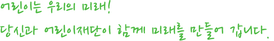
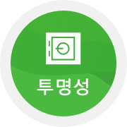

어린이재단은
재단소개 > 어린이재단은"/>

어린이가 혼자 그리는 그림은 꿈이지만 어린이와 우리가 함께 그리는 그림은 미래가 됩니다.
어린이재단은 어린이의 건강한 성장을 도우며 희망찬 미래를 열어갑니다 어린이의 올곧은 성장을 돕는
재단의 미래 사업에 동참하실 여러분을 기다립니다. 국내최대 아동복지 전문기관인 어린이재단에서
미래에 대한 투자 "나눔"을 시작하세요.
-
어린이 재단은 국내외 아동을 위하여 생존지원, 발달지원, 권리 옹호 사업을 펼치고 있으며 아동의 성장과 관련된 모든영역에 재단망의 특화되고 표준화된 복지 서비스를 제공하는 국내최대 아동복지 전문기관 입니다.
- 
어린이 재단은 "기부금품 모집 및 사용에 관한 법률"에 따라 모금과 배분사업을 진행하고 있습니다. 또한 나라의 투명한 살림을 책임지는 관련 공직자 및 전문가들이 믿고 선택하는 신뢰받는 기관입니다.
-
1948년 CFF로부터 출발하여 지난 60여 년간 세상 모든 아이들릐 행복을 위해 외길을 걸어왔습니다. 어린이재단은 한국의 사회복지 역사와 그 궤를 함께하며 기부 문화를 선도해 온 뿌리 깊은 아동복지 전문기관입니다.
-
세계 12개 회원국으로 구성된 국제 어린이재단 연맹의 회원 기관으로서 어린이재단은 세계 58개국(2013년 기준)의 아동을 위해 지역개발사업, 교육사업, 구호사업 등을 펼치고 있습니다. 국내를 넘어서서 인종, 성별, 종교, 국적에 상관없이 한결같은 인류애를 실천합니다.